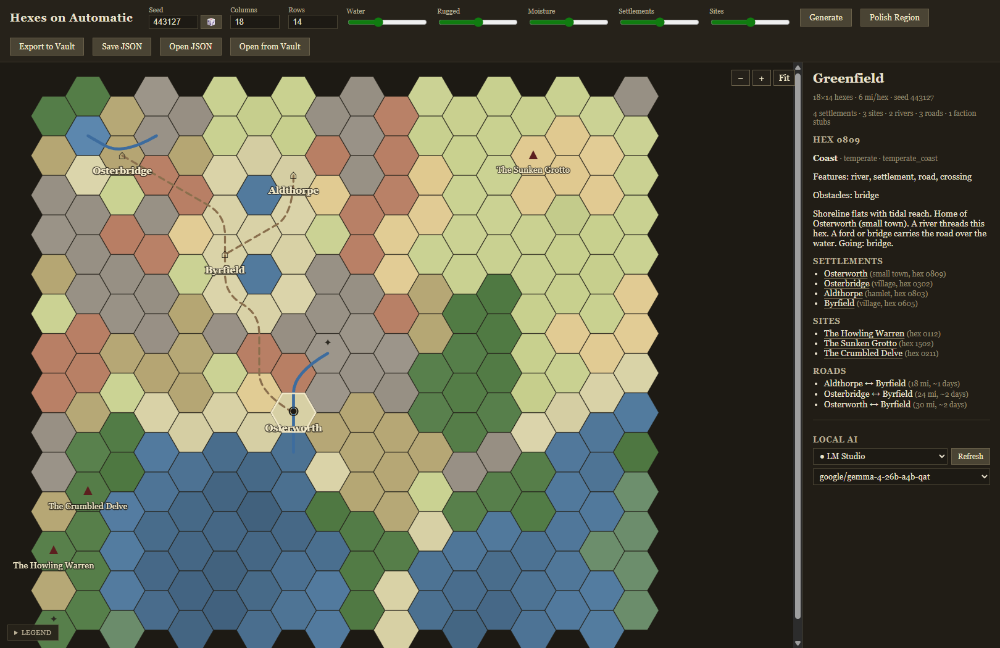

01 / SEED
Set the terms
Pick a seed, or roll one. Set columns and rows, then push water, ruggedness, moisture, settlements and sites toward the region you have in mind.
Give it a seed and a few knobs. A deterministic generator lays down terrain, rivers, settlements, dungeon sites and roads, then writes the whole region into an open Campaign Vault — with optional local AI to name and describe what the survey found.
Free early-access builds (0.1.x) · Windows, macOS & Linux · optional local AI built in · no account, no cloud — your prep stays on your machine

Hexes does the geography, the placement and the paperwork. The judgment calls stay yours, because they only make sense with your campaign on the table.
Pick a seed, or roll one. Set columns and rows, then push water, ruggedness, moisture, settlements and sites toward the region you have in mind.
Elevation, moisture and temperature fields pick a biome for every hex. Rivers trace downhill, settlements land where the scoring says people would, and roads join them.
Click a hex for its terrain, features, obstacles and residents. The gazetteer keeps settlements, sites and road distances in miles and walking days at your elbow.
One folder of markdown: a region note, a note per interesting hex, stubs for settlements, sites and factions, and a work order for every dungeon site.
Two directors run on a local model — the app can download one onto its bundled llama.cpp runtime, or connect to the Ollama, LM Studio or llama.cpp server you already have. They name places, write gazetteer notes and stage encounters, but every choice travels through a typed operation the generator validates. No model, no problem: without one you get the deterministic names instead.
The survey sets the facts: terrain per hex, a closed obstacle vocabulary, and a monster shortlist filtered by climate and terrain.
A director answers with picks and prose: names, notes, rumors and staged encounters, chosen from the lists it was handed.
An executor applies each operation. Anything off the menu is rejected and echoed back with the legal candidates, so the model can correct itself.
A checkpoint and validation gate get the last word. A pass that fails them falls back to the deterministic result, by name.
Every hex carries terrain, features, obstacles and residents. The region carries settlements, sites, roads, travel times and a first sketch of who holds power.
A region note, a note per interesting hex, stubs for settlements, sites and factions, machine state under state/, and a commission file for every dungeon site. Obsidian reads it as-is. How the vault ties the apps together.
Elevation, moisture and temperature fields shape the region at six miles per hex. Climate band and terrain pick each biome; rivers run downhill to the coast instead of wherever.
Settlement spots are scored on water, coast, terrain and spacing. Dungeon sites keep their distance from towns; landmarks and faction sketches fill in the rest.
A trunk network routed over terrain cost joins the settlements, with fords and bridges at the river crossings and a travel table in miles and walking days.
Passes, cliffs, bogs, scree, tolls and dry stretches follow from the terrain. Encounter and lair candidates come from a free library of 457 statted monsters, filtered by climate and terrain. Browse the monster library.
When Hexes places a site, it also writes commissions/<site>.request.json — seed, terrain and context in a fixed envelope. Dungeons on Automatic turns that stub into a keyed dungeon, and the linkage lives in the vault, never in either app.
The same promise as the rest of the family: the dice are yours to keep or re-throw, and nothing you wrote gets overwritten.
Repeat a region exactly. The same seed and knobs rebuild the same region, down to the last ford.
Shape the survey before it runs. Columns, rows, water, ruggedness, moisture, settlement and site counts are all yours to set.
Come back later. Open from Vault reopens a saved region, and your own prose outside the generated fences survives every re-export.
Polish is optional. One click downloads a small model onto the bundled runtime, or point Hexes at Ollama, LM Studio or llama.cpp. Deterministic code owns the map.
The 0.1.x builds cover every platform, generate real regions and write real vaults. The rough edges are listed plainly on the releases page. When something misbehaves, a bug report with the seed attached is the most useful thing you can hand us.
Hexes on Automatic is an original game aid by Kyle Norton for use with GURPS and Dungeon Fantasy Roleplaying Game from Steve Jackson Games. It is not official and is not endorsed by Steve Jackson Games.
GURPS and Dungeon Fantasy Roleplaying Game are trademarks or registered trademarks of Steve Jackson Games. All rights are reserved by Steve Jackson Games. This free, non-resale game aid uses those marks under the SJ Games Online Policy; no SJ Games art, logos, or trade dress are hosted here.